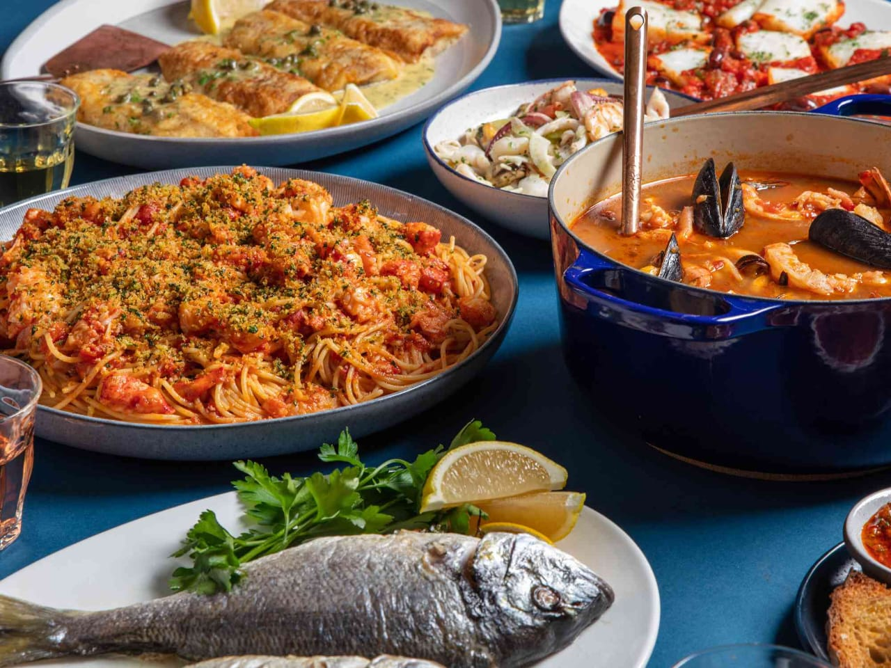

Explore a collection of delicious recipes designed to tantalise your tastebuds and inspire your inner chef.
Whether you're a seasoned cook or just starting in the kitchen, Odin Recipes has something for everyone.
Find easy-to-follow recipes for weeknight meals, impressive dishes for special ocassions, and everything in between.
Browse by category, search for specific ingredients, or discover new favourites based on your dieatry preferences.
With Odin Recipes, you'll never be at a loss for what to cook again. Let's get cooking.
